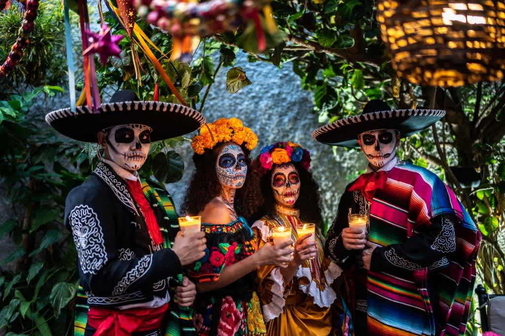
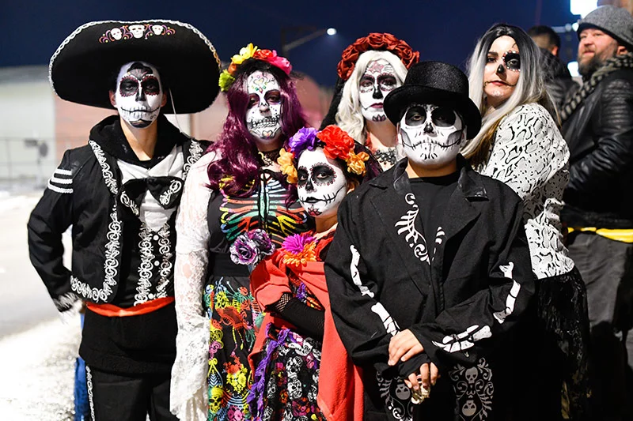
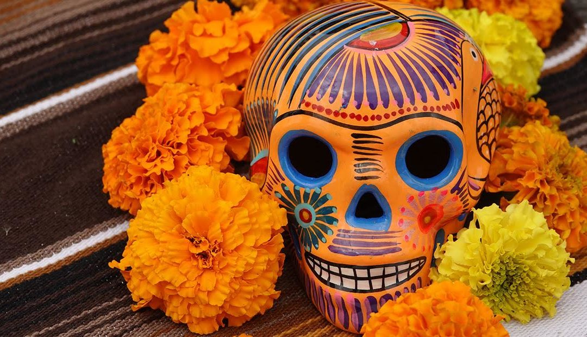

Día de Muertos



El Día de los Muertos se lleva a cabo en México los días 1° y 2 de noviembre de cada año. Esta fiesta nacional marca el regreso temporal a la tierra de los seres queridos fallecidos. Desde 2003 figura en la lista del patrimonio cultural inmaterial de la humanidad establecida por la UNESCO. Da lugar a celebraciones públicas coloridas y festivas, pero también a momentos de íntima meditación: cada vivienda incluye un altar decorado con ofrendas y se hace un camino de pétalos de flor de cempasúchil para representar la senda que deben tomar las almas para llegar al altar.